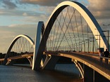
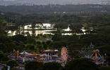

O que mais gosto em Brasília
Torre de TV

A Torre de TV de Brasília é uma torre de transmissão radiofônica e televisiva construída em Brasília e inaugurada em 1967 com 224 metros de altura. Fica no Eixo Monumental, no Jardim Burle Marx, e além da própria torre, que tem um mirante e um museu, o Museu das Gemas, seu entorno imediato tem diversas atrações, como a Feira da Torre e a Fonte da Torre de TV, o que torna o local um dos mais visitados pelos turistas, recebendo de dez a doze mil pessoas por semana
A Torre de TV sempre é assunto. O que será que estão falando a respeito no Twitter?
Ponte Juscelino Kubitschek
A Ponte Juscelino Kubitschek, também conhecida como Ponte JK ou Terceira Ponte, está situada em Brasília, ligando o Lago Sul, Paranoá e São Sebastião à parte central de Brasília, através do Eixo Monumental, atravessando o Lago Paranoá.
Inaugurada em 15 de dezembro de 2002, a estrutura da ponte tem um comprimento de travessia total de 1,2 quilômetros, tendo largura de 24 metros com duas pistas, cada uma com três faixas de rolamento, duas passarelas nas laterais para uso de ciclistas e pedestres com 1,5 metros de largura e comprimento total dos vãos de 720 metros.
Veja o que fazer nas proximidades da Ponte JK.
Parque da Cidade Dona Sarah Kubitschek
O Parque da Cidade é um parque multiuso localizado na Asa Sul, em Brasília, no Distrito Federal. Foi fundado em 11 de outubro de 1978 e possui 420 hectares (4 200 000 m²), sendo considerado o maior parque urbano da América Latina.
Trata-se de um dos principais e mais extensos centros de lazer ao ar livre da cidade, concentrando quadras de esportes, lagos artificiais, parque de diversões, centro hípico e pistas de caminhada, patinação e ciclismo. O parque é considerado patrimônio de Brasília.
Para saber o que fazer no Park da Cidade.
E existem muitos outros lugares interressantes na cidade...
- Catedral Metropolitana Nossa Senhora Aparecida
- Congresso Nacional
- Memorial JK
- Museu Nacional da República Honestino Guimarães
- E mais!